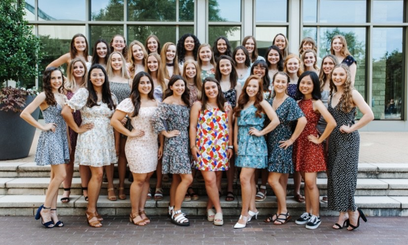
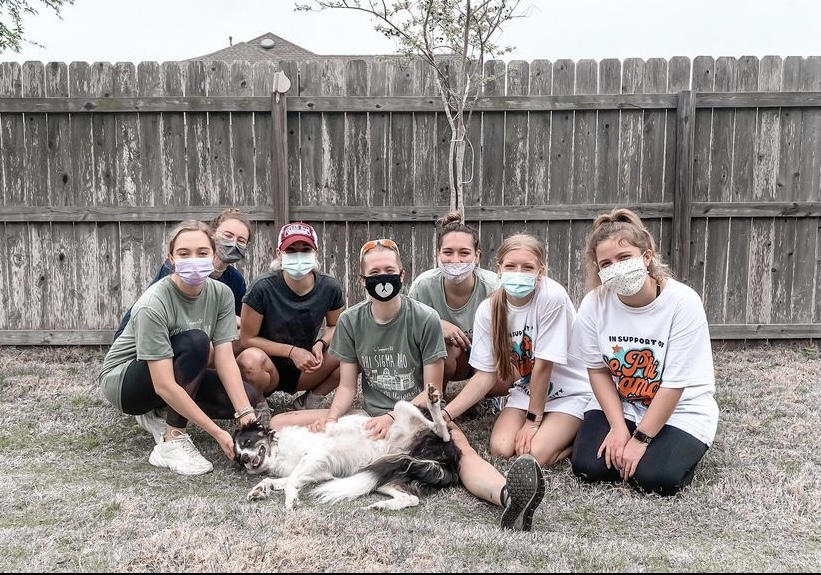
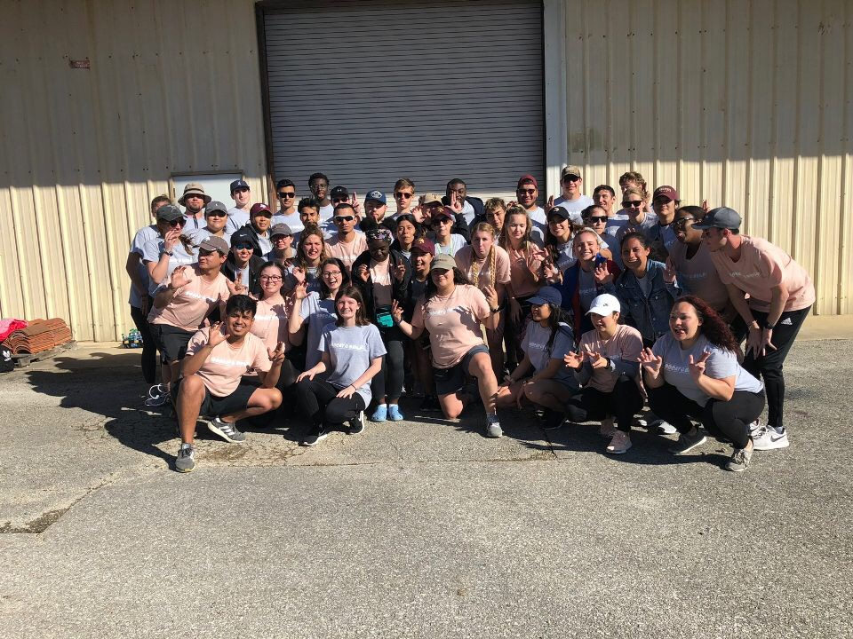

Phi Sigma Rho is a big part of my community service, therefore I wanted to futher explain them down below:
PHI SIGMA RHO: Phi Sigma Rho is a social sorority for women in technical studies serving our sisters and the community by promoting: 1. High standards of personal integrity, respect, and character, 2. Lifelong bonds of sisterhood, and 3. Academic and professional excellence with a social balance through shared experiences, common bonds, and recognition of service and achievement.

Come and check us out if you get the chance.
Chalk project: Phi Sigma Rho gives back to schools by going and drawing inspirational quotes and motivational quotes along with cute photos on the walkway to the school. This is a lot of fun and its super cute to get to see the children’s responses to seeing their school have art along the sidewalk. As well as a great stress relief from school.
Big event: Phi Sigma Rho volunteers as a group in the Big Event. The Big Event is a large community service activity in which Texas A&M students give back to their community through service to the residents of the College Station and Bryan area. Last year although some where virtual my group got to go and help a really sweet resident, mulch her flowerbeds, and pull the weeds out from the yard. We also got to meet her adorable dog, who became part of our picture below.

Light the night: Light the night is a charity walk that Phi Sigma Rho attends to help raise money for our philanthropy the Leukemia and Lymphoma society. LLS is a very serious cause that we are passionate about helping. The LLS mission: Cure leukemia, lymphoma, Hodgkin's disease and myeloma, and improve the quality of life of patients and their families. LLS funds lifesaving blood cancer research around the world, provides free information and support services, and is the voice for all blood cancer patients seeking access to quality, affordable, coordinated care.For more information about donating to the leukemia and lymphoma society I have put the link below:
Donate to LLS.Bake sale: Along with Light the Night we also bake and sell goods to raise money for the Leukemia and Lymphoma Society. Not only is it a fun volunteering event but it also creates a bond with our sisters.
Dream Girls: Another event that we are trying to put on is to work with younger girls and try to encourage them to pursue a career in S.T.E.M. As the current outreach director, I am looking for ways to help us volunteer with the girl scouts and do S.T.E.M related activities throughout the semester.
Another big community service event is Bobcat Build, this event is like the Big event at Texas A&M I was a member of commity and worked really hard to put together the biggest volunteer opporunity in the San Marcos area. For More information checkout the link below.
Bobcat Build